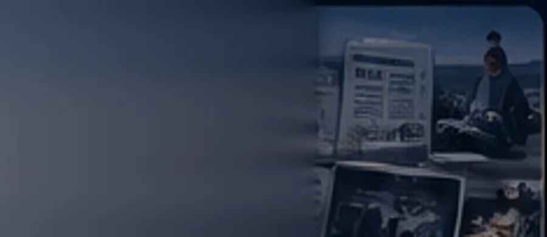
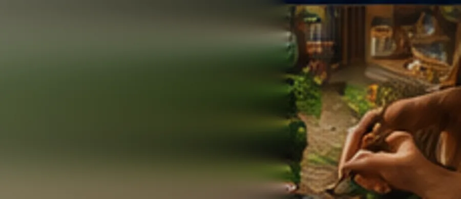
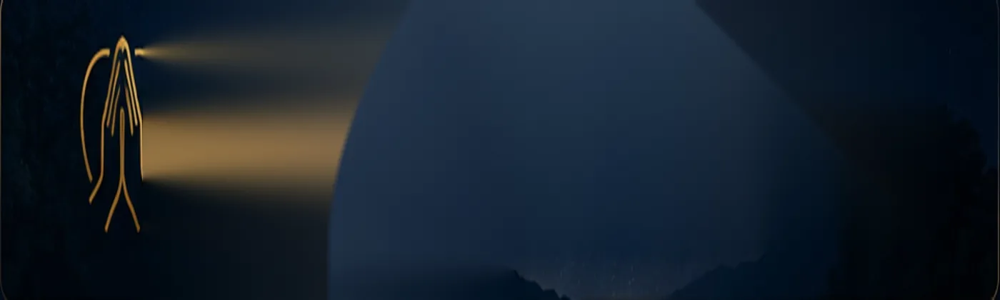
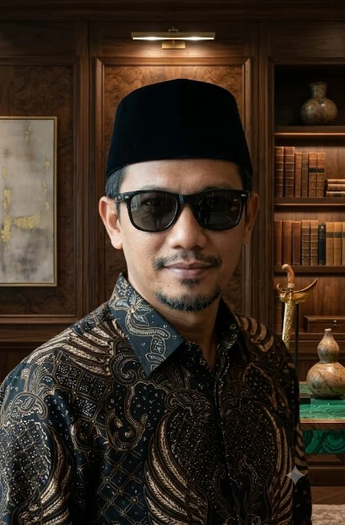

Ekosistem Terpadu Warga Banua
Bagaimana sebuah nilai diaplikasikan dalam kehidupan nyata sehari-hari hingga kembali menjadi sesuatu yang bernilai dan bermanfaat bagi orang banyak.
JELAJAHI EKOSISTEMDARI BANUA, TERHUBUNG KE DUNIA.
Mari kita jadikan ekosistem ini sebagai MUARA bagi dunia menjelajahi Banua. Dimana arus pengetahuan, peluang, karya, dan kemitraan bergerak dua arah.
Konektivitas global adalah jembatan ekosistem—bukan ornamen pada halaman.
ENAM SUNGAI, SATU MUARA
Enam aliran value yang bermuara di satu tujuan: kemajuan bersama.
Pusat aliran informasi faktual dan terpercaya regional Kalimantan.
Navigasi mendalam seputar Ekonomi, Analisis Pasar Modal, dan update harga komoditas.
Dinamika kebijakan, analisis peta Politik nasional, serta geopolitik regional Kalimantan.
Destinasi wisata, termasuk teleportasi antarmoda orang dan barang terhubung regional Kalimantan.
Pusat Edukasi, literasi finansial, playbook eksekusi, serta modul pembelajaran taktis.
NILAI YANG TERUS MENGALIR
Setiap value yang masuk ke rumah ini diupayakan kembali memberi dampak.
LAYANAN EKOSISTEM
Berbeda fungsi, satu rumah. Setiap ruang dirancang untuk mengalirkan value ke ruang lainnya.

Riset, data, analisa, dan wawasan independen untuk Banua dan dunia.

Tempat karya, produk, jasa, dan peluang bertemu.
Transportasi, paket wisata, hotel, event, dan pengalaman bermakna.
Ruang menempa SDM, melahirkan karya nyata, dan mengapresiasi rekam jejak.

Ruang layanan yang dipersiapkan untuk mempermudah ikhtiar ibadah tanpa menjadikannya sekadar piala duniawi.
LUMBUNG GENERASI BANUA
Enam sungai bukan hanya aliran informasi, pasar, kebijakan, perjalanan, dan karya. Masing-masing adalah jalur kaderisasi menuju peran, kontribusi, dan kelak menjadi pewaris sungainya.
Perintis
Memahami medan, nilai, dan dasar peran di sungainya.
Penjelajah
Belajar melalui pengalaman, praktik, dan kontribusi nyata.
Pewaris Sungai
Siap menjaga, mengembangkan, dan meneruskan value sungainya.
PENGHUNI BICH
Penghuni bukan dekorasi. Diantara mereka adalah Anda yang akan tampil terlihat disini ketika sistem memiliki data nyata tentang kontribusi, karya, dan rekam jejak yang tersedia.
Ruang penghuni telah disiapkan. Daftar publik akan muncul ketika data penghuni terverifikasi tersedia.
KARYA TERBARU DARI PENGHUNI
Karya nyata akan mengisi ruang ini secara organik. Tidak ada profil, pencapaian, atau karya yang dibuat-buat demi memenuhi tampilan.
Menunggu karya nyata yang telah siap dipublikasikan.
Apresiasi akan muncul berdasarkan rekam jejak yang benar-benar ada.
Tempat hasil belajar dan praktik menemukan jalur manfaatnya.
KEMUDAHAN IBADAH, DENGAN MARTABAT.
Setiap keberhasilan adalah karunia Tuhan. Layanan ini diarahkan untuk mempermudah ikhtiar ibadah.
“Berkarya dengan martabat. Melayani dengan ketulusan. Bertumbuh bersama. Bersyukur atas karunia Tuhan.
Mozens Inc. dibangun sebagai rumah yang menghubungkan informasi, karya, transaksi, pembelajaran, perjalanan, dan kontribusi—agar value tidak berhenti pada satu aliran.
